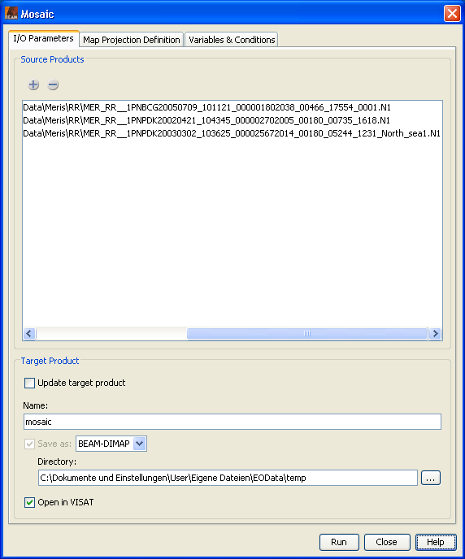
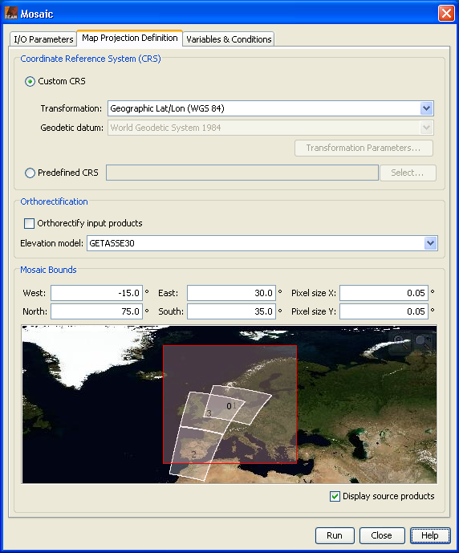
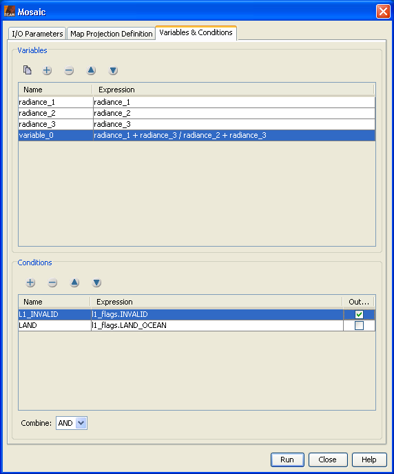

| Mosaic | |
Source Products
Specify the source products which shall be combined to one mosaic. Target ProductUpdate target product: If selected, all processing parameters are taken from the output product which must already exists. Modification of all parameters is disabled in this mode. If 'Run' is pressed, the output product is updated with the given input files. If not selected, a new mosaic output product will be created. Name: Used to specify the name of the target product.
Save as:
Used to specify whether the target product should be saved to the file system. The
combo box presents a list of file formats, currently BEAM-DIMAP, GeoTIFF, and HDF5.
The text field allows to specify a target directory. Open in VISAT: Used to specify whether the target product should be opened in VISAT. When the the target product is not saved, it is opened in VISAT automatically. |
 |
Coordinate Reference System (CRS)Custom CRS: The transformation used by the projection can be selected. Also the geodetic datum and transformation parameters can be set, if possible for the selected transformation. Predefined CRS: By clicking on the Select... button a new Select Coordinate Reference System Dialog is shown where a predefined CRS can be selected. OrthorectificationOrthorectify input products: If selected the source products are not only reprojected to the defined CRS but also orthorectified.
Elevation model:
You can select the digital elevation model which should be used for
orthorectification. Either you use the internal elevation
model of
the product or an external DEM. If you select an external DEM and it is currently not installed on your
system,
a dialog will appear to enable you to download and install the DEM. Mosaic BoundsWest: Specifies the western bound in degree which is guaranteed to be within the geographical boundary of the output product. East: Specifies the eastern bound in degree which is guaranteed to be within the geographical boundary of the output product. North: Specifies the northern bound in degree which is guaranteed to be within the geographical boundary of the output product. South: Specifies the southern bound in degree which is guaranteed to be within the geographical boundary of the output product. Pixel size X: Specifies the pixel size in X direction of the output product in map units. Pixel size Y: Specifies the pixel size in Y direction of the output product in map units. World Map: The world map in which the geographical boundary of the resulting output product is displayed. Display source products: If selected the geographic boundaries of the source products are also displayed in the world map. |
 |
VariablesDefines the list of output variables. ConditionsDefines the list of valid pixel conditions.
Combine:
If more than one valid pixel condition is given, they are combined using the
condition operator which can take the values |
 |